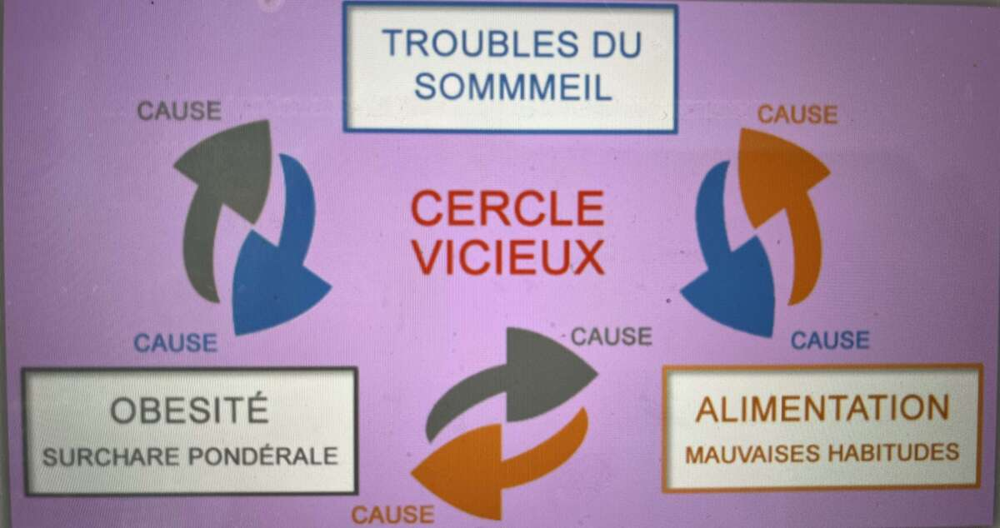

1. Bilan détaillé
De vos habitudes alimentaires, de votre niveau d'activité physique et de votre qualité de sommeil.
N... Nutrition
AP... Activité Physique
SO... SOmmeil
L'alimentation, l'activité physique et le sommeil sont les piliers de notre bonne santé. Notre équilibre mental et physiologique dépend principalement de notre hygiène alimentaire.
En effet pour être et rester en bonne santé, il faut manger sainement, mais aussi bouger suffisamment et avoir une bonne qualité de sommeil.
« Je mange mal donc je dors mal donc je bouge peu !
Je dors mal donc je mange mal donc je bouge peu !
Je bouge peu donc je dors mal donc je mange mal ! »
En tant qu'expert formé à l'accompagnement personnel, j'agis en véritable sentinelle et acteur de prévention, afin de dépister les erreurs de comportements liés à l'alimentation, l'activité physique et au sommeil.
Je vous propose un accompagnement et un suivi personnalisé pour atteindre vos objectifs, qui prend en compte votre âge et sexe, vos conditions familiales, sociales et professionnelles, ainsi que vos potentielles pathologies.
De vos habitudes alimentaires, de votre niveau d'activité physique et de votre qualité de sommeil.
Ensemble, nous cocréons un programme adapté à vos besoins, en tenant compte de vos goûts et vos contraintes dans le domaine de l'alimentation, de l'activité physique et du sommeil. Je vous apporte mes conseils et toute mon expertise.
Évaluer la nature de vos progrès, mais aussi les éventuelles difficultés rencontrées afin d'y apporter des solutions. Je vous conseille, je vous encourage, je vous motive !

Fondée par le Docteur Laurence Plumey, médecin nutritionniste et praticien hospitalier à l'Hôpital Necker et à l'Hôpital Antoine Béclère, la NAPSOthérapie vise à optimiser les comportements dans les trois domaines clés de la santé que sont la nutrition, l'activité physique et le sommeil, pour aider à être et rester en bonne santé.
Prévenir pour limiter les risques de fatigue et de pathologies, en prônant l'équilibre alimentaire, un niveau d'activité physique suffisant et une bonne qualité de sommeil.
La thérapie passe par un audit, du conseil, un accompagnement et un suivi personnalisé.